ナイフを自動で投げよう
🎯 この章でできるようになること
- シーン変数を作って、数や「真・偽」を覚えておける
- シーンタイマーで、決まった間隔ごとにアクションを動かせる
- 「Repeat」（くり返し）のイベントで、同じアクションを何回もくり返せる
- 騎士が向いている方向へ、ナイフを自動で飛ばせる
このゲームでは、プレイヤーはナイフをねらって投げません。
決まった間隔で、騎士が向いている方向へナイフが自動で飛んでいきます。
プレイヤーは動いて、敵をよけることに集中できます。
2-1. この章で作るしくみ
（本数 × 方向の数）回くり返して、ナイフを作って飛ばす
2-2. ナイフと変数を用意しよう
「オブジェクト」の「＋」から Dungeon のパックを開き、「Weapon」の中の「Knife」を選んでプロジェクトに追加します。
ナイフはイベントで作り出すので、シーンに置かなくてOK。
もし置いてしまったら、シーンのナイフをクリックして Delete キーで消しておこう。

「Game Scene」のタブで、ステージの外の何もないところをクリックします。
左の「シーン変数」の右の、四角から矢印が出たマークを押すと、「Game Scene 変数」の画面が開きます。
「変数を追加」で次の7つを作り、「適用」を押します。
| 名前 | 型 | 値 | 意味 |
|---|---|---|---|
FaceAngle | 数値 | 0 | 騎士が向いている方向（角度） |
KnifeCooldown | 数値 | 1 | 何秒ごとにナイフを投げるか |
KnifeCount | 数値 | 1 | 1回に投げる本数 |
KnifeDirs | 数値 | 1 | 投げる方向の数 |
KnifeIndex | 数値 | 0 | 今、何本目を投げているか |
ShotAngle | 数値 | 0 | 今投げるナイフの角度 |
LevelingUp | 真偽値 | 偽 | レベルアップ中かどうか（第4章で使う。 今は偽のまま） |
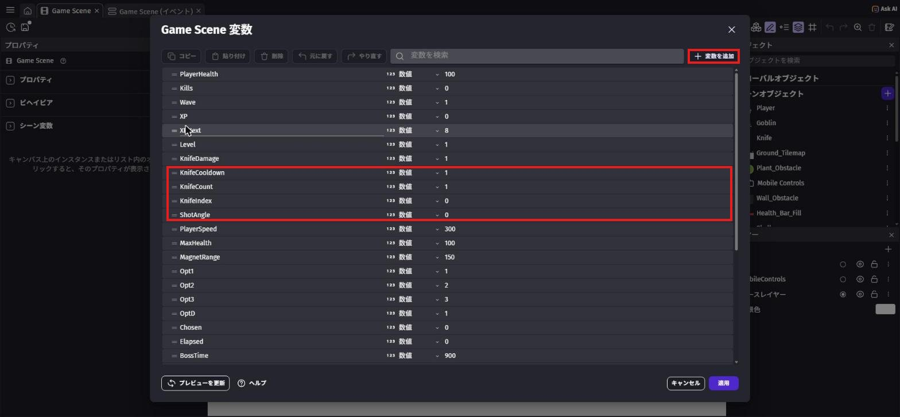
写真は完成したときのものなので、ほかの章で作る変数もならんでいます。
今作るのは上の表の7つだけです（FaceAngle・KnifeDirs・LevelingUp は下のほうにあります）
型が「数値」なら数を、「真偽値」なら「真（はい）」か「偽（いいえ）」のどちらかを覚えます。
ナイフの本数や間隔を変数にしておくと、第4章のレベルアップで数を変えるだけで強くできます。
「Game Scene (イベント)」を開き、Player グループのいちばん下に新しいイベントを作ります。
条件は「移動している」で Player。
アクションは 変数の値を変更 で検索 →「変数の値を変更」、変数 は FaceAngle、演算子 は「＝（代入）」、値 は下の式。
Player.TopDownMovement::Angle()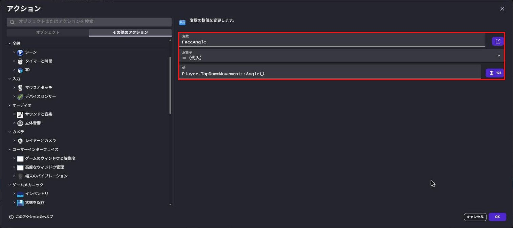
右が 0、下が 90、左が 180、上が 270（−90）です。
でも、止まっているときは歩いていないので、方向がわかりません。
そこで「動いているときだけ」FaceAngle に覚えておけば、止まったあとも最後に向いていた方向へナイフを投げられます。
2-3. タイマーでナイフを投げよう
右下の「+ 追加...」→「イベントグループ」で、新しいグループ Start を作ります。
その中に、条件 シーンが始まった →「シーンが始まった」のイベントを作ります。
アクションは シーンタイマーをスタート で検索 →「シーンタイマーをスタート（またはリセット）する」、タイマーの名称 は "KnifeTimer"（ダブルクォーテーションごと入れる）。
これがないとタイマーが動かず、ナイフが1本も飛びません。
もう1つ新しいグループ Knife を作り、その中にイベントを作ります。
条件は2つです。
変数の値で検索 →「変数の値」、変数 はLevelingUp、「偽」シーンタイマーの値で検索 →「シーンタイマーの値」、タイマーの名称 は"KnifeTimer"、テスト記号 は「≧（以上）」、時間（秒）はKnifeCooldown
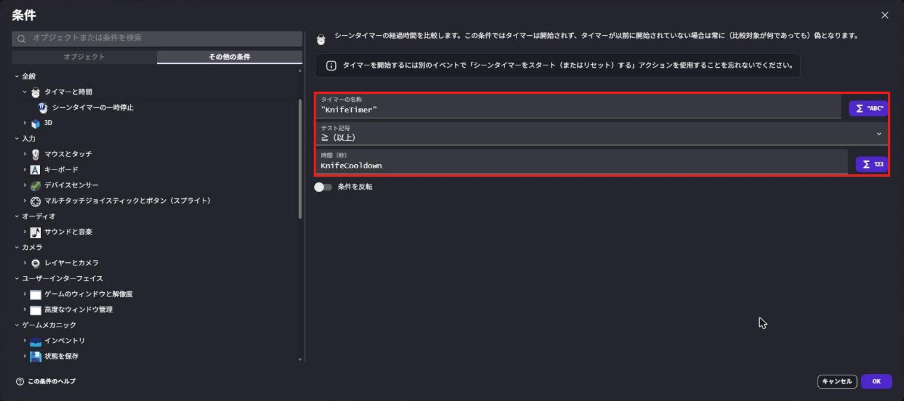
アクションは3つです。
- 「シーンタイマーをスタート（またはリセット）する」で
"KnifeTimer"（0にもどして、また数えはじめる） - 「変数の値を変更」で
KnifeIndexを「＝（代入）」0 - 投げる音（下の説明）
音は サウンドを再生 で検索 →「サウンドを再生する」を選びます。
「使用するオーディオファイルを選択してください」の欄をクリックして、「アセットストアから選択」を押そう。
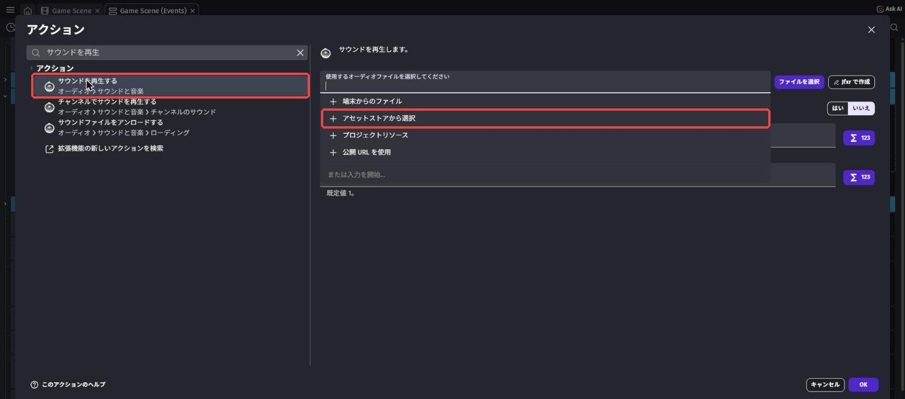
検索欄に throw と入力すると、「sfx_throw.ogg」（作者: Kenney、CC0）が出てきます。
左の ▷ を押すと、音をためしに聞けます。
選んで「プロジェクトに追加」を押します。
もとの画面にもどったら、音量に 30 と入れて「OK」。
音がなくてもナイフは飛ぶので、うまくいかないときはあとまわしでも大丈夫です。
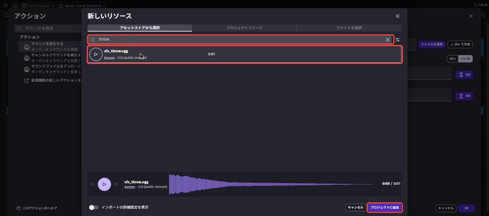
throw で検索 → 音を選んで「プロジェクトに追加」（赤枠）名前をつけて、いくつでも使えます。
「KnifeCooldown 秒たったら → リセットして投げる」をくり返すので、1秒ごとにナイフが飛びます。
LevelingUp の条件は、第4章でレベルアップの画面を出しているあいだ、ナイフを止めるためのものです。
2-4. くり返しでナイフを作ろう
今作ったイベントを右クリックして、「追加」→「Repeat」を選びます（「サブイベント」ではありません）。
このメニューは、日本語の画面でも英語のまま表示されます。
繰り返す回数には下の式を入れます。
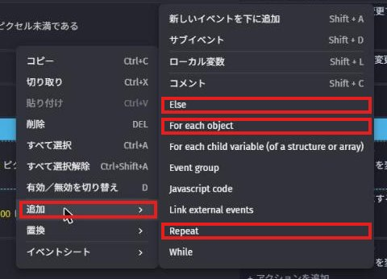
この写真は3Dアクション編のプロジェクトで撮ったものです
KnifeDirs * KnifeCount繰り返しのイベントは、右クリックしたイベントの下（同じ段）にできます。
そのままだと、タイマーに関係なく毎回動いてしまいます。
必ずドラッグして、写真のようにタイマーのイベントの中（一段右にずれた場所）に入れよう。
イベントシートには「KnifeDirs * KnifeCount 回繰り返します：」と表示されます。
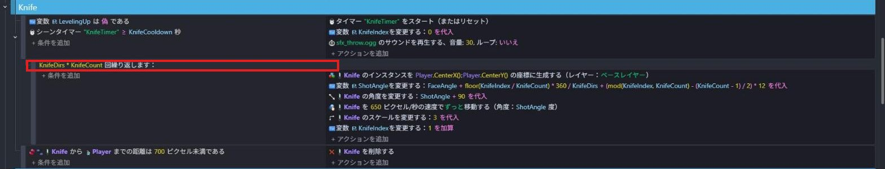
今はどちらも 1 なので、1回だけくり返して、1本だけ投げます。
第4章のレベルアップで、この数がふえていきます。
繰り返しのイベントに、アクションを6つ入れます。
上から順番に入れよう。
オブジェクトを生成で検索 →「オブジェクトを生成する」、Knifeを XPlayer.CenterX()、YPlayer.CenterY()に作る- 「変数の値を変更」で
ShotAngleを「＝（代入）」、値 は下の式 角度で検索 →「角度」、Knifeを「＝（代入）」ShotAngle + 90- 左の一覧で
Knifeを選び、「フォースを追加する（角度）」、角度ShotAngle、速度650、下は「永続的」 スケールで検索 →「スケール」、Knifeを「＝（代入）」3（3倍の大きさ）- 「変数の値を変更」で
KnifeIndexを「＋（加算）」1
FaceAngle + floor(KnifeIndex / KnifeCount) * 360 / KnifeDirs + (mod(KnifeIndex, KnifeCount) - (KnifeCount - 1) / 2) * 12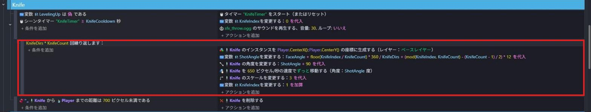
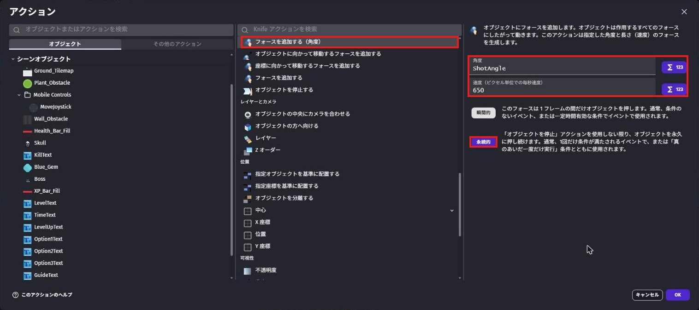
でも、中身はこんなことをしています。
FaceAngle… 騎士が向いている方向が、スタートの角度floor(KnifeIndex / KnifeCount) * 360 / KnifeDirs… 何番目の方向かを決めて、360度を方向の数で分けた分だけ回す（方向が2つなら前と後ろ、4つなら十字）(mod(KnifeIndex, KnifeCount) - (KnifeCount - 1) / 2) * 12… 同じ方向に何本も投げるとき、12度ずつ扇のように広げる
つまり今は、ShotAngle は FaceAngle と同じ角度です。
そのままだと横向きに飛んでしまうので、90度足して、刃先が飛ぶ方向を向くようにしています。
「瞬間的」にすると、一瞬だけ押されてすぐ止まってしまいます。
イベントシートには「Knife を 650 ピクセル/秒の速度でずっと移動する（角度：ShotAngle 度）」と表示されます。
Knife グループに新しいイベントを作ります（繰り返しの中ではなく、タイマーのイベントの下）。
条件は、左の一覧で Knife を選び、「2つのオブジェクト間の距離」、オブジェクト 2 は Player、距離 は 700。
「条件を反転」をONにして「700 より遠い」にします。
アクションは「オブジェクトを削除する」で Knife。
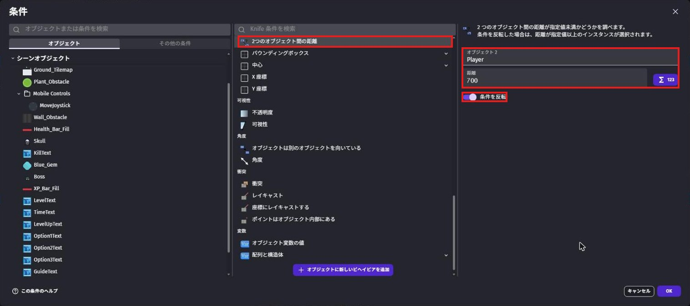
イベントシートには「Knife から Player までの距離は 700 ピクセル未満である」と出て、反転のしるしがつきます。
遠くへ行ったナイフを消さないと、見えないナイフがどんどんたまって、ゲームが重くなってしまいます。
保存してから プレビュー します。
止まっていても動いていても、1秒ごとに、騎士が向いている方向へナイフが飛んでいきます。
右へ歩けば右へ、上へ歩けば上へ飛びます。
音を入れた人は、投げるたびに「シュッ」と鳴れば成功！
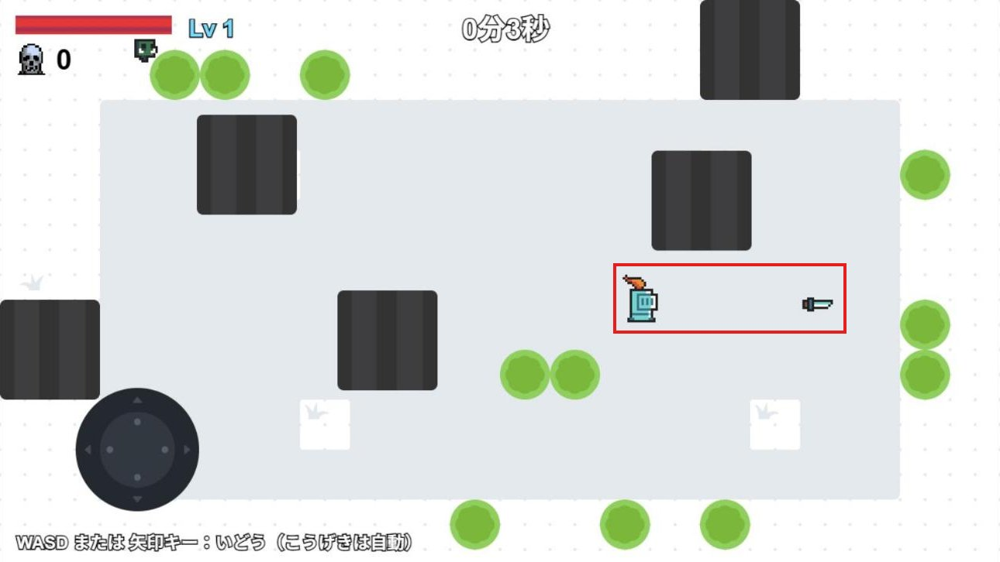
写真は完成したときのものなので、体力バーやゴブリンも写っています
💪 やってみよう
シーン変数の KnifeCount を 3 にしてプレビューしてみよう。
次に KnifeDirs を 4 にしてみよう。
ナイフの飛び方がどう変わるか、たしかめたら 1 にもどしておこう。
ヒント
KnifeCount を 3 にすると、同じ方向に3本が扇のように広がって飛びます。
KnifeDirs を 4 にすると、前・うしろ・左右の4方向に飛びます。
これが第4章のレベルアップで手に入る強化です。
2-5. 🚨 つまずきポイント集
ナイフが1本も飛ばない
原因1: 「シーンが始まった」でタイマーをスタートしていない、またはタイマーの名前がちがう。
→ 2か所とも "KnifeTimer" になっているか、大文字・小文字まで確かめよう。
原因2: LevelingUp の値が「真」になっている。
→ シーン変数の画面で、LevelingUp が「偽」になっているか確かめよう。
ナイフが出るけど動かない
原因: フォースが「瞬間的」になっている。
直し方: 「フォースを追加する（角度）」を開いて、「永続的」を選びなおそう。
ナイフが横向きのまま飛ぶ
原因: 角度 の式に「+ 90」がない。
直し方: Knife の角度が ShotAngle + 90 になっているか確かめよう。
ナイフがものすごくたくさん出る
原因: 繰り返しのイベントがタイマーのイベントの中に入っていない。
または、「シーンタイマーをスタート（またはリセット）する」を入れ忘れたか、繰り返しの中に入れてしまった。
直し方: 繰り返しのイベントを、ドラッグしてタイマーのイベントの中（一段右）に入れよう。
タイマーのリセットは、繰り返しの外（タイマーのイベントのアクション）に入れよう。
いつも右にしか飛ばない
原因: FaceAngle を覚えるイベントがない、または ShotAngle の式に FaceAngle が入っていない。
直し方: Player グループに「移動している → FaceAngle ＝ Player.TopDownMovement::Angle()」があるか確かめよう。
2-6. ✅ チェックリスト
全部チェックできたら第2章クリア！
🎉 次回は、ゴブリンがおしよせてくるよ。